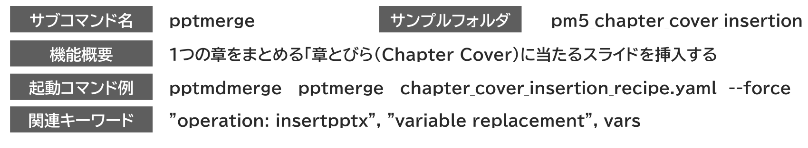
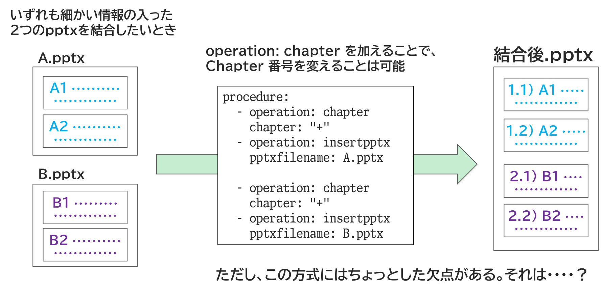
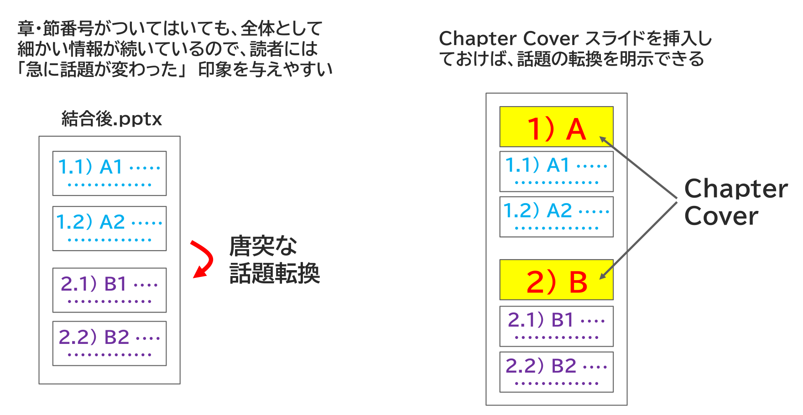
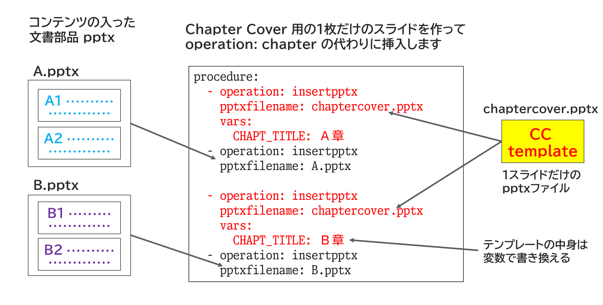
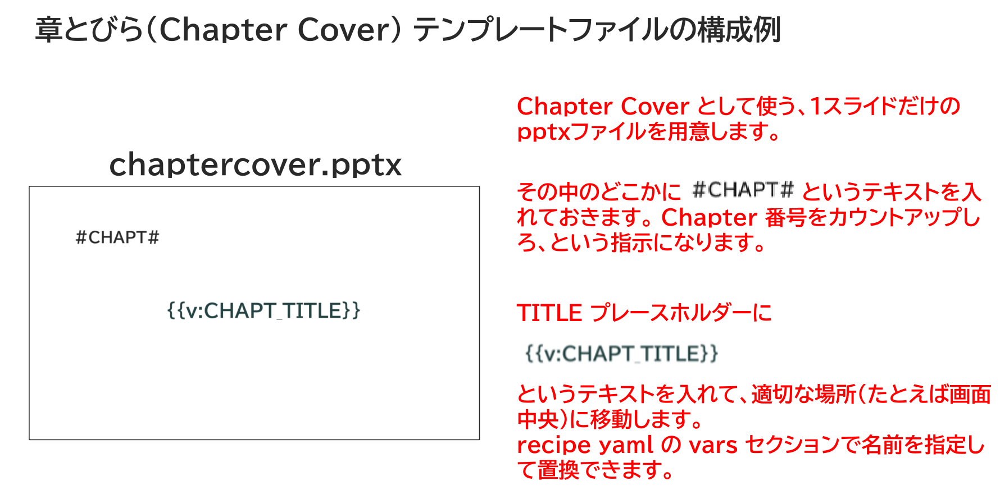

章・節、つまり Chapter/Section 構造の書籍にはしばしば 「章とびら（Chapter Cover）」 をつけます。これは章全体の説明や、各節の概要、章単位での目次などを含むスライドであり、いわば 「前置き」 です。
それに対して、本題は 「節」 の部分に記述します。通常、この部分を文書部品マスターとして個別の pptx ファイルとして管理します。つまり、個別の文書部品マスターpptxには「本題」 部分しか入っていないことがあります。
そこで、Chapter Cover が必要なら別途挿入します。

機能としては単なる operation:insertpptx と varsであり、Chapter Cover 用ファイルを用意して中身を変数置換することで実現します。
Chapter Cover 挿入運用の詳しい説明をします。
たとえばいずれも細かい情報の入った２つのpptxを結合したい、その際、話題が違うので Chapter 番号を変えたいとします。 operation: chapter を加えることで、Chapter 番号を変えること自体は可能ですが、この方式にはちょっとした欠点があります。

章・節番号がついてはいても、全体として細かい情報が続いているので、読者には 「急に話題が変わった」 印象を与えやすいのです。

はっきりとデザインの違う Chapter Cover スライドを挿入しておけば、この問題を解決できます。
そこで、Chapter Cover 用の1枚だけのスライドを作ってoperation: chapter の代わりに operation: insertpptx で挿入します。
ただし、同じファイルだとChapterが分からないので、テンプレートの中身を変数で書き換えられるようにします。

Chapter Cover テンプレートファイルの作り方です。
#CHAPT# マーカーを入れておくこと、TITLE プレースホルダーに置換用の変数を入れておくことがポイントです。

概要説明文やChapter目次やも入れたければ、それも変数にしておけば置き換えられます。